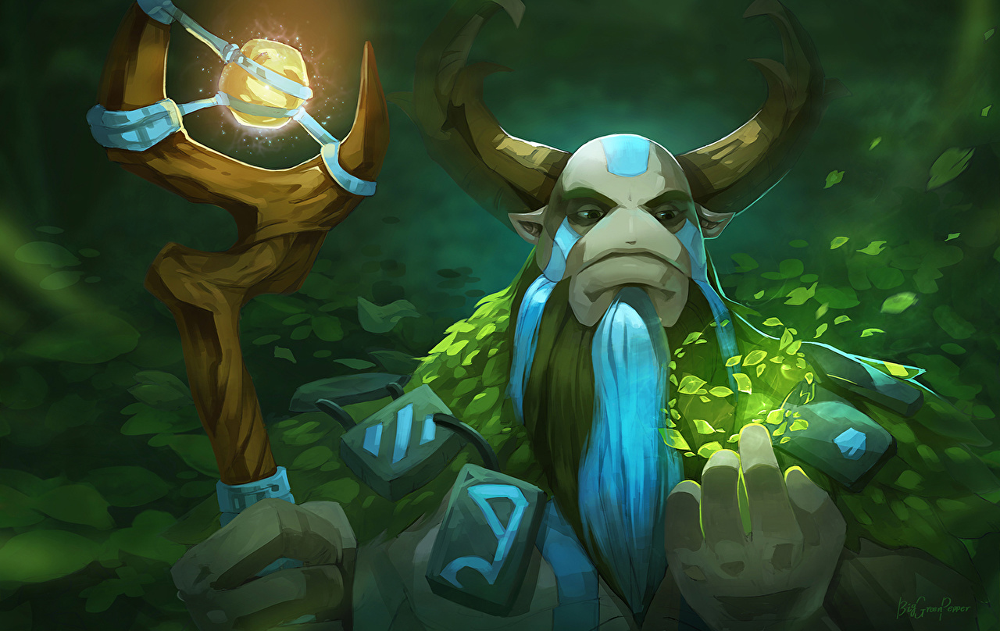

Трент - найсильніший герой у грі Dota2,
він може йти на будь-яку позицію бо він мужик.
Може брати любі айтеми бо крутий.
І взагалі красавчік геній.
він може йти на будь-яку позицію бо він мужик.
Може брати любі айтеми бо крутий.
І взагалі красавчік геній.
TREANT ATTACKER


Трент ЧЕРЕЗ РАПІРУ
Історія: Далеко на заході, в горах, що лежать за Долиною віщунів, лежать залишки стародавньої сили,
дещиці первозданної енергії, що проростає глибоко у високогірних лісах. Кажуть, що те, що там росте - росте дивно.
Це місце святе для сил природи, і його тримають прихованим і недоступним. Незліченні пастки й небезпеки, що вкривають ту землю, -
всепоглинаючі трави, змішані тварини та отруйні квіти - але немає серед них нічого настільки ж грізного, як могутні енти-захисники.
дещиці первозданної енергії, що проростає глибоко у високогірних лісах. Кажуть, що те, що там росте - росте дивно.
Це місце святе для сил природи, і його тримають прихованим і недоступним. Незліченні пастки й небезпеки, що вкривають ту землю, -
всепоглинаючі трави, змішані тварини та отруйні квіти - але немає серед них нічого настільки ж грізного, як могутні енти-захисники.